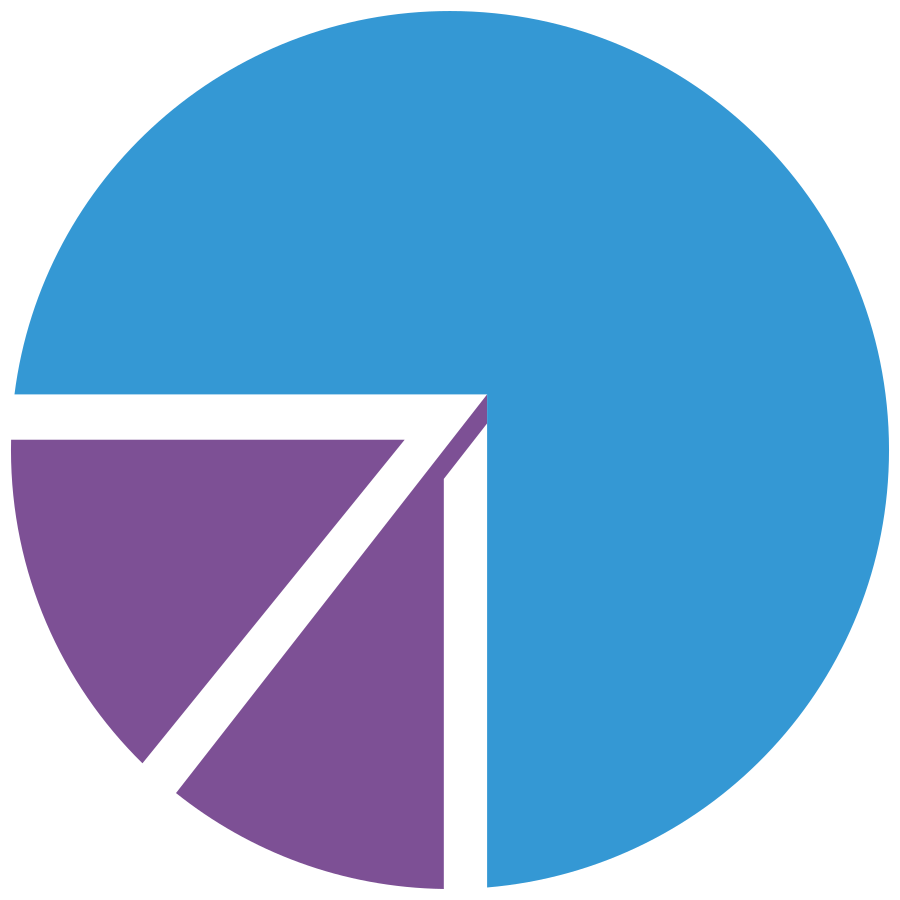

한국기독교장로회 국제협력 선교사
현재 시간
국가별 파송 현황
데이터 로딩 중...
노회별 파송 현황
데이터 로딩 중...
선교편지 (최근 3개월)
현재
0
개의 새로운 소식이 있습니다.
배경 로고 설정
크기:
작게
보통
크게
매우 크게
투명도:
연하게
보통
진하게
닫기
선교사 파송지도
•••
좌우로 스와이프하세요
선교편지를 불러오는 중...
🔍
✕
국가별 보기 종료
노회별 보기 종료
이 지도는 전세계에 흩어져 선교사역을 감당하고 있는 총회파송 해외선교동역자님들의 현황을 시각적으로 보여줍니다.
귀한 선교사역을 위해 기도로 함께 하여 주시기를 부탁드립니다.
최신 선교 소식을 확인하세요
✕
🙏
기도가 기록되었습니다
함께 기도해 주셔서 감사합니다
홈
선교편지
지도
검색
내정보
' stroke-width='2'/%3E%3Cpath d='M30 50 L45 65 L70 35' stroke='rgba(255,255,255,0.6)' stroke-width='3' fill='none'/%3E%3C/svg%3E)